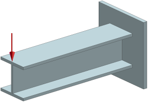
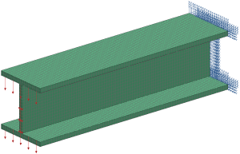
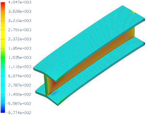
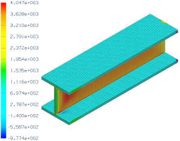
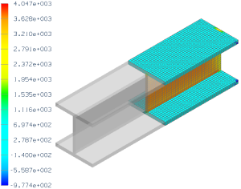
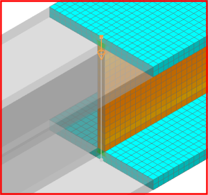
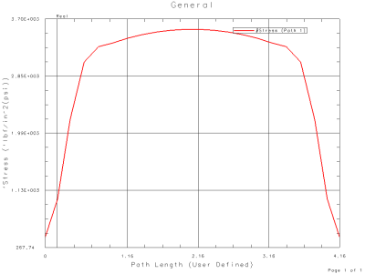
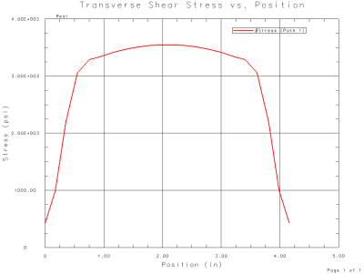

Advanced Simulation contains a suite of post-processing tools for displaying analysis results. The following exercise demonstrates some of these tools.
A cantilevered I-beam is shown below. Using the SOL 101 Linear Statics - Global Constraints solution sequence, perform a structural analysis and use the post-processing tools to graph the transverse shear stress acting through the web of the beam.

|
Property |
Value |
|
Part |
I_beam.prt |
|
Solution sequence |
SOL 101 Linear Statics - Global Constraints |
|
Idealization |
None |
|
Material |
Steel |
|
Mesh |
CHEXA8 Element size 0.2 in |
|
Constraints |
Fix the end at the wall support |
|
Loads |
Apply a 3600 lbf load to the free end in the indicated direction |

A summary of the steps to complete the analysis is listed below.
Open the part file and start Advanced Simulation. Create new FEM and Simulation files.
In the Simulation Navigator, expand Polygon Geometry and clear Polygon Body (2).
Define the material and the physical properties and create a 3D mesh collector.
For a detailed description of how to complete this step, see the Define mesh properties with mesh collectors activity.
Mesh the model with the 3D Swept Mesh command. Select an end of the I-beam and use the following settings:
Set element type to CHEXA8.
Set element size to 0.2.
Select On-Zero Triangles.
Clear Automatic Creation and assign the mesh to the mesh collector created in the previous step.
|
Note |
For this model, CHEXA8 elements are used to produce a highly ordered mesh with a line of nodes lying on the centerline of the web. |
Make the Simulation the work part.
To constrain the model, use the Fixed Translation Constraint command.
To apply the 3600 lbf force, use the Force command. Distribute the force over the end of the beam.
Solve the model.
To access the analysis results, in the Simulation Navigator, double-click Results.
The transverse shear stress for the I-beam is given by the YZ stress component. To view a contour plot of the YZ stress component, in the Post Processing Navigator, expand Solution 1. Next, expand Stress-Element-Nodal and double-click YZ. The resulting contour plot (in psi) should look similar to the one shown below.

Now graph the transverse shear stress acting through the web of the beam:
Display the results using undeformed geometry. Use the Edit Post View command. In the Post View dialog box, clear Deformation.
The resulting contour plot (in psi) should look similar to the one depicted below.

|
Note |
Later you will select node locations on a cutting plane. Using undeformed geometry allows the node locations and cutting plane to coincide. |
Use the Edit Post View command to display the stress results on a cutting plane some distance from either end of the beam.
In the Post View dialog box:
From the Display on list, select Cutting Plane.
Click the Options button.
In the Cutting Plane dialog box:
From the Cut Plane list, select Y.
Select Show Clipped Ghost.
From the Clip Side list, select Negative.
Enter 8.0 for the slider position.
The resulting contour plot (in psi) should look similar to the one shown below.

Collect the stress values for the nodes lying on the centerline of the web. In the Post Processing Navigator, right-click Post View 1 and choose New Path. In the Path dialog box, select Coordinates from the Method list and use the probe to identify nodes on the centerline of the web at the top and bottom of the cross section.

Graph the results along the path. In the Post Processing Navigator, right-click Post View 1 and choose New Graph.
In the Graph dialog box:
In the X Axis group, from the Define By list, select Path Length.
In the Y Axis group, select Define By Path.
Select Include Intersections.

Interpretation of the graph can be improved by editing the default format settings. Before you edit the graph format, create an XY Graph Template where you will save the edited format. If you do not create a graph template, the formatting changes you make are saved in the default template.
To activate the graph template that you created, in the XY Function Navigator, under XY Graph Templates, right-click the graph template and select Activate.
Under the Results tab, in the XY Graph group, use the Editing command to:
Specify the Y-axis range to be from 0 to 4000 and change the Y-axis label to Stress (psi).
Specify the X-axis range to be from 0 to 5 and change the X-axis label to Position (in).
Change the title of the graph to Transverse Shear Stress vs. Position.
After editing the graph formatting, save the graph template. After formatting the graph, it will look similar to the following:

For your reference, a completed model for this project is located in the ..\projects\solved_project_models folder.